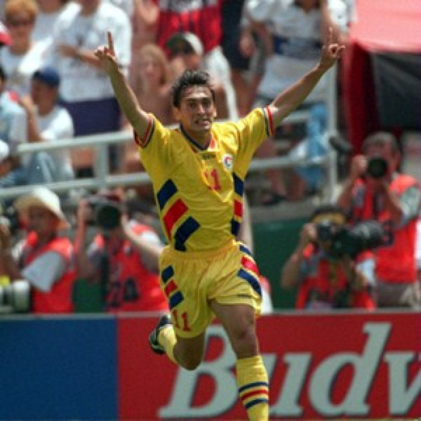
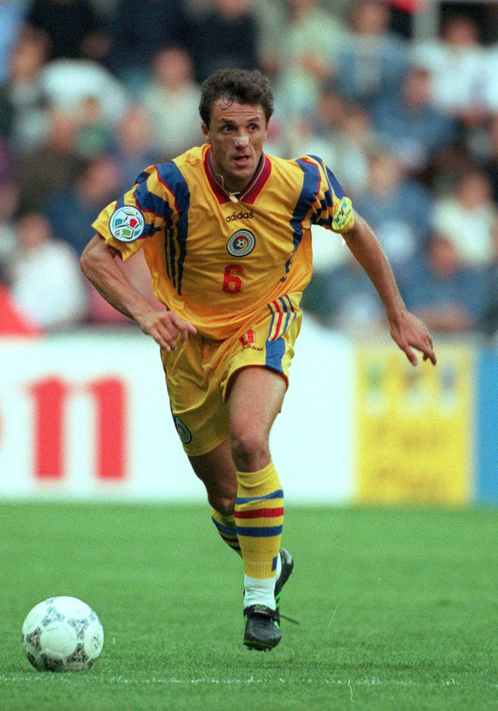

Gheorghe Hagi

Gheorghe Hagi (n. 5 februarie 1965, Săcele, România) este un fost fotbalist român, considerat unul dintre cei mai buni mijlocași ofensivi în Europa anilor '80 și '90 și cel mai mare fotbalist român din toate timpurile. Fanii lui Galatasaray l-au numit "Comandante" (Comandantul) și românii l-au numit "Regele". Supranumit "Maradona din Carpați", Hagi este considerat un erou în România. A fost numit fotbalistul român al anului de șapte ori, și este privit ca unul dintre cei mai buni fotbaliști ai generației sale. Ca un constructor de joc avansat, a fost recunoscut pentru dribling, tehnică, viziune, pase și finalizare.
Ilie Dumitrescu

Ilie Dumitrescu (n. 6 ianuarie 1969, București, România) este un fotbalist român retras din activitate, devenit apoi antrenor și analist sportiv. A cunoscut consacrarea ca fotbalist la Steaua București. A mai jucat în Anglia, Spania și Mexic. A făcut parte din lotul echipei naționale a României cu ocazia realizării celei mai mare performanțe a acesteia, sfertul de finală jucat la Mondialul din 1994. Ca antrenor, a pregătit printre altele echipele grecești AEK Atena și PAOK Salonic, dar și fosta sa echipă, Steaua București. În martie 2008 a fost decorat cu Ordinul „Meritul Sportiv” clasa a III-a, pentru rezultatele obținute la campionatele europene și mondiale din perioada 1990-2000 și pentru întreaga activitate.
Gică Popescu

Gheorghe Popescu, cunoscut mai ales ca Gică Popescu (n. 9 octombrie 1967, Calafat, jud. Dolj) este un fost fotbalist român, actualmente impresar. A participat cu echipa națională de fotbal a României la trei turnee finale ale Campionatelor mondiale (1990, 1994 și 1998) și la două ale Campionatelor europene de fotbal (1996 și 2000). De-a lungul carierei a jucat la CS Universitatea Craiova, Dinamo București, Steaua București, PSV Eindhoven, Tottenham Hotspur, FC Barcelona, U.S. Lecce, Galatasaray S.K. (cu care a câștigat Cupa UEFA în 2000) și SV Hannover 96, câștigând 13 trofee. A fost căpitanul celebrei echipe FC Barcelona, cu care a câștigat Cupa Cupelor.